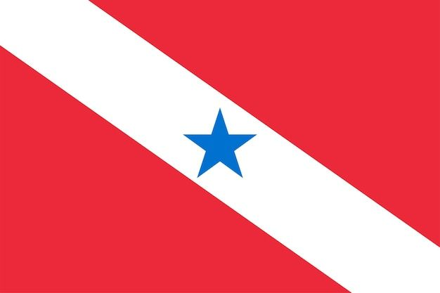

Pará
O Pará, um estado do norte do Brasil, abriga o Parque Nacional da Amazônia. Protegendo uma vasta faixa da densa e exuberante Floresta Amazônica, o parque abriga milhares de espécies selvagens. Grande parte dela inunda anualmente, tornando áreas remotas acessíveis por barco. Perto da foz do Rio Amazonas fica Belém, a capital do Pará. É conhecida por sua arquitetura colonial e pelo mercado Ver-o-Peso, à beira-mar.

Os espanhóis foram os primeiros estrangeiros a aportarem no Pará, que era, até o início do século XVI, habitado apenas pelas populações indígenas. A área atraiu também a atenção de ingleses e holandeses, mas foram os portugueses quem se fixaram na região onde fica atualmente a capital, Belém, no ano de 1616. Esse momento histórico foi marcado pela construção do Forte do Presépio, que tinha como objetivo a proteção do novo domínio português.
Naquele mesmo ano, foi criada a capitania do Grão-Pará. Durante o século XVII e parte do XVIII, o território paraense era integrado ao Maranhão, formando o estado do Grão-Pará. A sua economia da época era baseada na atividade agropecuária, com a criação de gado e os cultivos de tabaco, cana-de-açúcar, cacau e café.
Quando se deu o desmembramento dos territórios do Grão-Pará e Maranhão, em 1774, esse sistema econômico foi diretamente afetado. A sua recuperação aconteceu a partir do final do século XIX, quando se iniciou o ciclo da borracha. Ressalta-se, ainda, que, entre 1835 e 1840, a então província do Pará foi palco da Cabanagem.
A economia da borracha, que perdurou até meados do século XX, representou um momento de grande prosperidade para a região, que se reflete muito bem na arquitetura das capitais, como é o caso de Belém e o Teatro da Paz, e na paisagem urbana em geral, bem como na intensificação do processo de urbanização.
A descoberta das jazidas minerais na serra dos Carajás, que data de 1967, marcou o início de um novo ciclo produtivo no estado. Como vimos, a mineração permanece, ainda hoje, como uma das principais atividades econômicas do Pará.
Capital : Belém
População : 8,12 milhões (2022)
Área : 1,248 milhões de km²
Governador : Helder Barbalho
Código ISO 3166 : BR-PA
O quadro cultural paraense possui bases muito diversas, oriundas das populações indígenas, africanas e europeias, principalmente portuguesas. A influência dessas diferentes matrizes é refletida nos costumes, nas celebrações tradicionais, na música, na gastronomia, na literatura e nas artes em geral.
O Pará é palco de grandes celebrações religiosas que atraem turistas de todo o país, como o Círio de Nazaré, realizado todos os anos pelas ruas da capital, Belém, e considerado uma das maiores festas religiosas do Brasil. O Círio Noturno de Santo Antônio ocorre em diversas cidades paraenses. Outras festas e danças típicas do estado são a marujada (ou fandango) e o Festival do Çairé. Este é realizado no município de Alter do Chão, e reúne a religiosidade e o folclore amazônico.
Alguns ritmos musicais são bastante característicos do Pará, como a guitarrada, o tecnobrega, o calypso, o carimbó e o lundu, da ilha de Marajó. O artesanato marajoara, representado pelas composições de cerâmica, ressalta a sua identidade local. Além disso, possui grande valor econômico para a população, consistindo em uma fonte de renda para os artesãos.
A culinária paraense possui uma grande variedade de pratos típicos, dentre os quais podemos citar o tacacá, o pato no tucupi, a maniçoba, o caruru e frutos como açaí, cupuaçu e pupunha.